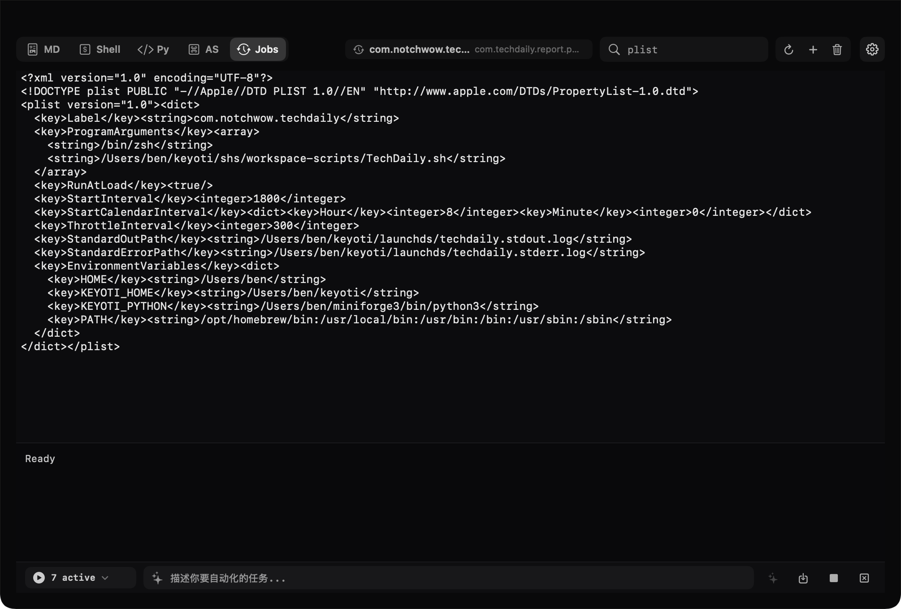

MD
Markdown notes
Capture tasks, links, screenshots, wiki links, and formatted notes with a native Markdown editor.
notchwow keeps your Markdown notes, Shell commands, Python tools, AppleScripts, and launchd jobs in one compact local workspace.
macOS 14+ · unzip · move to Applications · first launch: right-click Open

Five workspaces
Hover the MacBook notch to open the workbench. Switch modes without leaving the current app, edit local files directly, and keep outputs close to the source.
Capture tasks, links, screenshots, wiki links, and formatted notes with a native Markdown editor.
Keep scripts, command input, and transcripts together. Optionally load your Benshell environment.
Run files or use a persistent REPL, with Conda environment discovery and configurable roots.
Edit and run macOS automation scripts. Files are syntax-checked before execution.
Create, inspect, load, unload, and refine scheduled local jobs with visible plist source.
Generate script and plist proposals with Bailian, inspect the complete result, then choose whether to apply it.
Local first
notchwow is designed around inspectable files and explicit actions. Scripts live in your
~/keyoti workspace, deletions move to Trash after confirmation, and generated edits remain proposals until you accept them.
Markdown, Shell, Python, AppleScript, and launchd files each have clear workspace directories. Shell and Python integrations can follow custom Benshell and Conda roots from Settings.
Built with SwiftUI and AppKit. API keys are stored in Keychain, files stay local, and the app uses standard macOS recycling, signing, and launchd workflows.